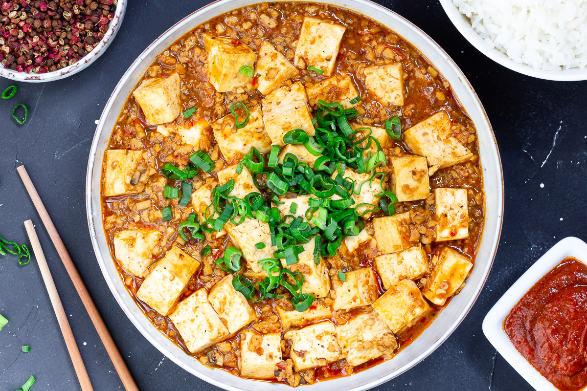
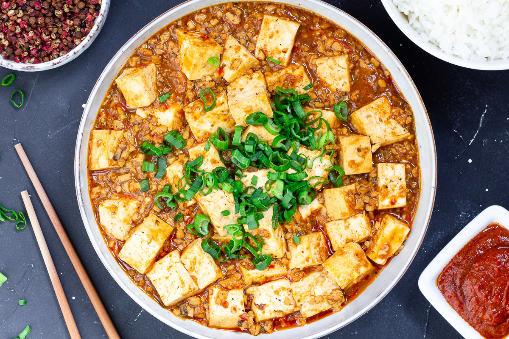

Mapo Tofu

Need something smooth and spicy? Mapo Tofu is a simple tofu dish from Sichuan China. It's great over rice and easy to prep/save for college students! This recipe is for people who want to try authentic Chinese food but do not have Sichuan spices to use.
Recipe Ingredients
- 1 pack silken tofu
- 2 green onions, thinly sliced
- 1/2 lb ground pork
- 1 pack mapo tofu sauce (store bought)
- 3 cloves minced garlict
- soy sauce to taste
- 2 tbsp cooking oil
Recipe Steps
- Brown pork in wok with oil for 4-5 minutes
- Add sauce and garlic, stir fry for 2 minutes
- Add tofu and mix lightly as to not break up the tofu too much, until heated through
- Add soy sauce, green onion and dish up
Additional Food Images

 

White Sauce Pasta

White sauce pasta is a creamy and savory dish that can be enjoyed for either lunch or dinner. Inspired by a fusion of Italian and French cuisine, the rough texture of rigatoni pasta allows for heavier sauces to be picked up, including the flavor profile of this delicious sauce. This union of two cultures allows for the perfect balance between each component of the recipe, creating a fulfilling entree that every individual can enjoy.
Recipe Ingredients
- Olive Oil
- Butter
- Diced Onion
- Diced Garlic
- Diced Bell Pepper
- Rigatoni Pasta
- Heavy Whipping Cream
- Milk
- Shredded Parmesan Cheese
- Salt
- Ground Pepper
- Garlic Powder
- Onion Powder
- Paprike
- Oregano Leaves
- Bay Leaves
- Parsley Leaves
Recipe Steps
- Bring a pot of water to a boil. Once the water begins to bubble, add in the pasta, salt, and a drizzle of oil.
- While the pasta is cooking, heat oil and butter in a saucepan.
- Once the butter has melted, add in diced onions and garlic. Sauté them until golden brown or aromatic.
- Stir in the bell pepper until slightly softened.
- Pour in the heavy cream, milk, salt, ground pepper, garlic powder, onion powder, paprika, oregano leaves, and bay leaves into the saucepan. Mix well and allow for the mixture to simmer. Adjust the seasoning to your taste.
- Add the shredded parmesan cheese and stir until melted.
- Throw in pasta and mix until the pasta is coated with the creamy sauce.
- Garnish with parsley leaves, and enjoy.
Additional Food Images


Dead Simple Fried Rice

This Dead Simple Fried Rice recipe is an incredibly modular and tasty dish. At its core, it's just rice, vegetables, protein, and oil. As such, the dish can be modified to serve as many or as few people as needed with a wide variety of food preferences. Experimentation with what specific ingredients you enjoy the most will unlock the full potential of this dish.
Recipe Ingredients
- Long-grain white rice
- Frozen vegtables
- Eggs
- Milk (optional)
- Oil of choice
- Salt
- Soy sauce
Recipe Steps
- In a rice cooker, add half a cup of rice, a cup of water, a touch of oil, and a pinch of salt. Cook the rice. Tip: if there are tough frozen veggies, such as broccoli, you might want to add the frozen veggies to the integrated steamer basket.
- On high medium heat on your stovetop, in a frying pan, add your chosen oil. Add some milk if desired. Then, scramble the eggs.
- Before the eggs are fully done, add the frozen vegetables. Add fresh vegetables when required so they are fully cooked by the end.
- Once the rice is done, add it to the pan. Poor your desired amount of Soy Sauce. Stir well.
- Let the fried rice cook until it is no longer visibly oily and the dish is nice and hot, with the vegetables fully cooked.
- Plate the fried rice. Enjoy!
Additional Food Images